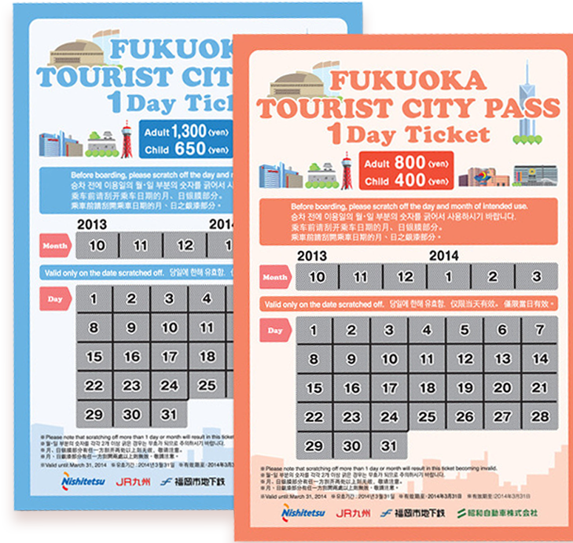
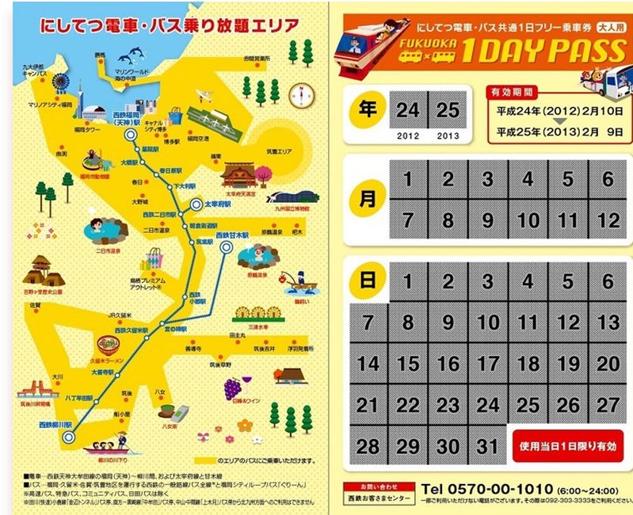
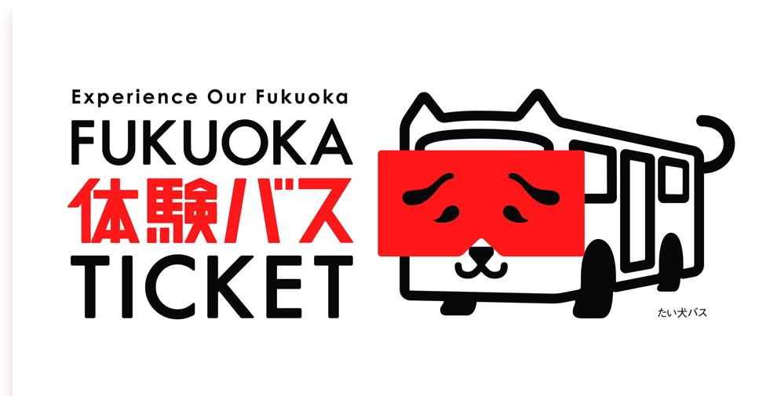

그린패스 (900엔) / 그린패스 다자이후 (1500엔)
후쿠오카 내 자유승차구역, 후쿠오카 공항 국제선-하카타역 버스,
후쿠오카 국제선-하카타, 텐진 버스, 100엔 순환 버스,
텐진-하카타역 급행 버스 이용 가능 (+다자이후 라이너 버스)
지하철, 사철, JR라인 이용 불가능

오렌지 패스 (820엔) / 하늘색 패스 (1340엔)
니시테츠 버스, 쇼와 버스, JR라인, 지하철 이용 가능 (하늘색 +니시테츠 지하철)
하카타역, 텐진-마리노아시티 330번 버스,
하카타 버스 터미널-다자이후 타비토 버스 이용 불가능

1일권 (1500엔)
후쿠오카 내 버스 및 전철 모두 이용 가능
JR라인, 사철 이용 불가능

1일권 (1500엔)
후쿠오카 도시권 니시테츠 버스노선, 체험 프로그램 2회 이용 가능
지하철, JR라인, 사철 이용 불가능